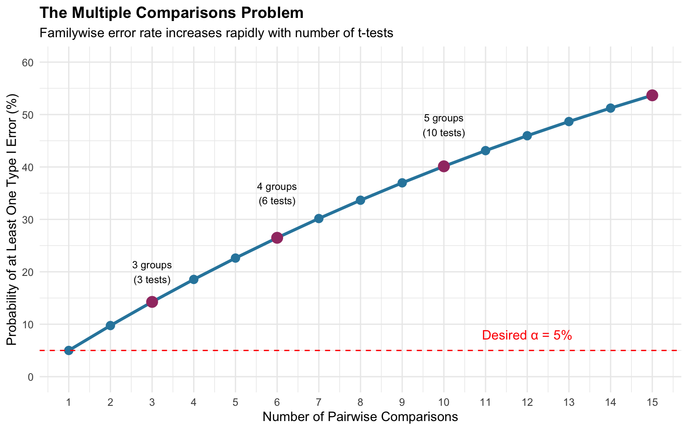
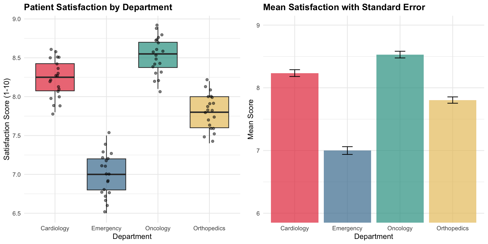
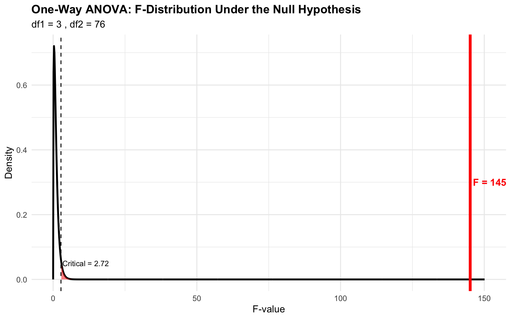
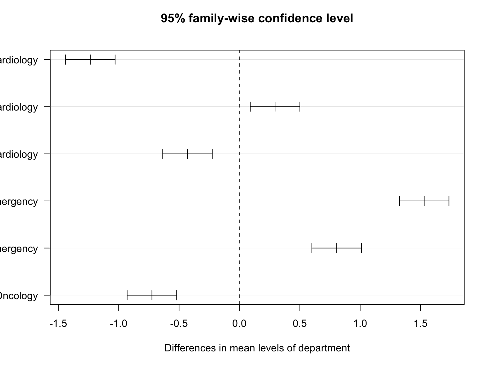
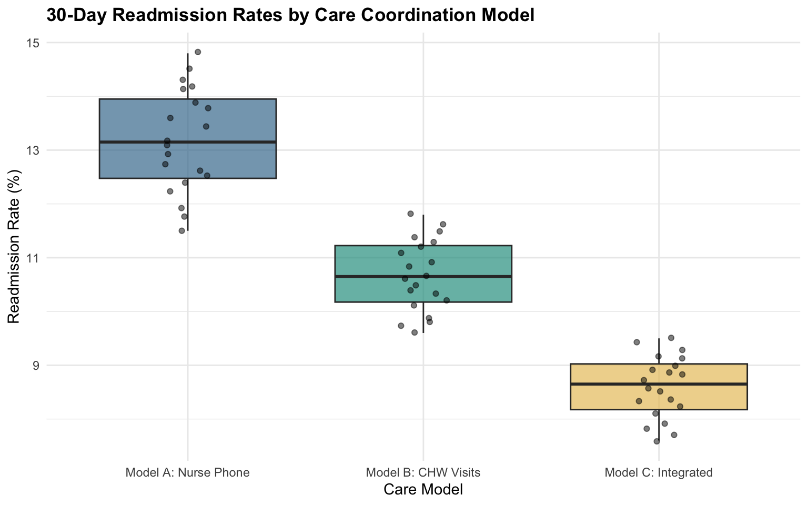
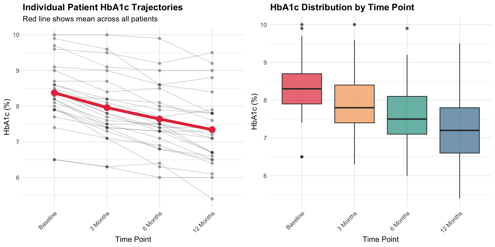
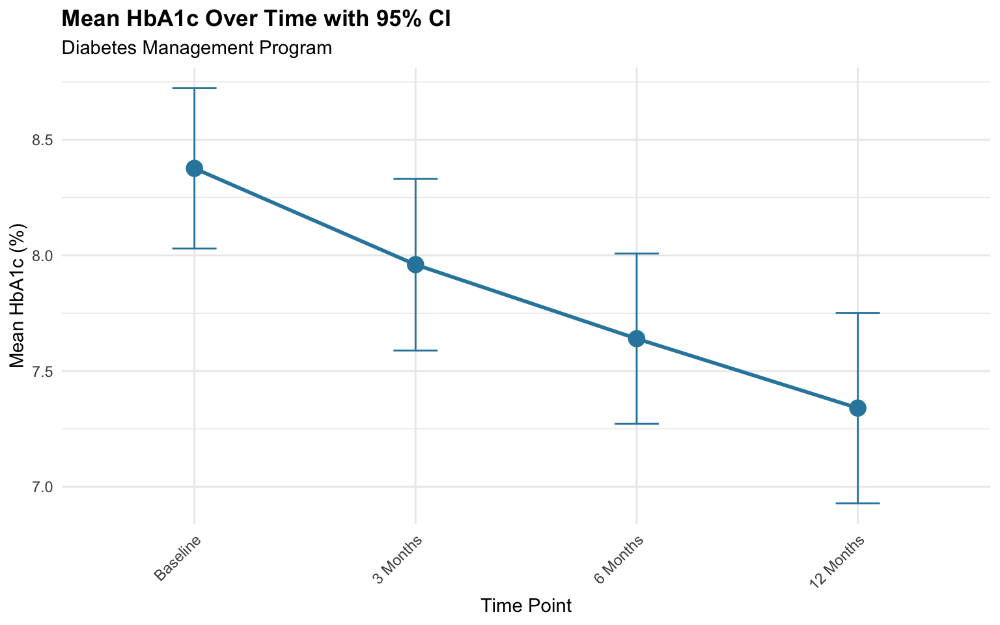
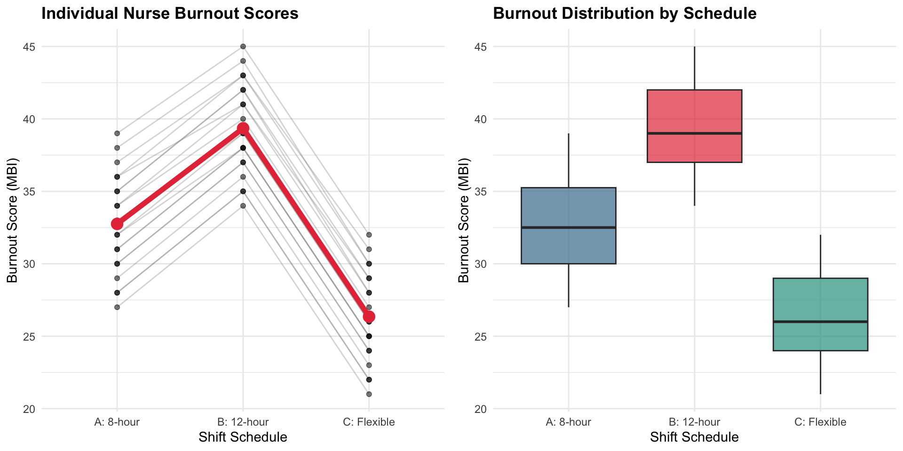
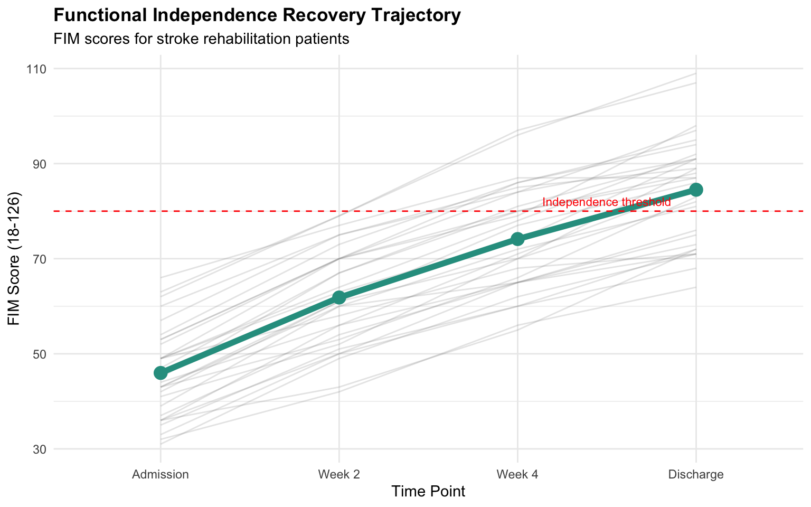

ANOVA 1: One-Way and Repeated-Measure ANOVA
MBA642: Business Analytics in Healthcare Management
Introduction to ANOVA
Why ANOVA Matters in Healthcare Management
In healthcare settings, we frequently need to compare outcomes across more than two groups. Consider these common scenarios:
- Comparing patient satisfaction scores across five different hospital departments
- Evaluating readmission rates among three different care coordination models
- Assessing staff performance across four different training programs
- Tracking patient outcomes at multiple time points during recovery
While t-tests are excellent for comparing two groups, they cannot handle these multi-group comparisons. This is where Analysis of Variance (ANOVA) becomes essential. ANOVA allows us to determine whether there are statistically significant differences among three or more group means in a single test.
The Problem with Multiple T-Tests
You might wonder: “Why not just run multiple t-tests to compare each pair of groups?” This approach is tempting but fundamentally flawed due to the familywise error rate problem.
Familywise Error Rate
Each time we conduct a statistical test at α = 0.05, we accept a 5% chance of making a Type I error (false positive—concluding there’s a difference when there isn’t one). When we perform multiple tests, these error rates compound.
The probability of at least one Type I error across multiple tests is:
\[P(\text{at least one Type I error}) = 1 - (1 - \alpha)^k\]
Where \(k\) is the number of comparisons.
Example: With just 4 groups, you would need 6 pairwise t-tests. The familywise error rate becomes: \[1 - (0.95)^6 = 0.265 = 26.5\%\]
This means you have a 26.5% chance of finding at least one “significant” difference by pure chance—far from the 5% we intended!
ANOVA Solves This Problem
ANOVA tests all groups simultaneously with a single test, maintaining the Type I error rate at our desired α level. If ANOVA finds a significant difference, we then use post-hoc tests with appropriate corrections to identify which specific groups differ.
Overview of ANOVA Types
This document covers two fundamental ANOVA designs:
| ANOVA Type | Purpose | Example |
|---|---|---|
| One-Way ANOVA | Compare means across 3+ independent groups | Comparing satisfaction scores across 4 hospital departments |
| Repeated-Measures ANOVA | Compare means across 3+ related measurements on the same subjects | Tracking pain scores at baseline, 1 month, 3 months, and 6 months |
1. One-Way ANOVA
What is it?
A one-way ANOVA (Analysis of Variance) tests whether there are statistically significant differences among the means of three or more independent groups. The “one-way” refers to having one independent variable (factor) with multiple levels (groups).
Despite its name, ANOVA actually analyzes variance to make inferences about means. It works by partitioning the total variability in the data into:
- Between-group variance: Differences among group means
- Within-group variance: Differences among individuals within groups
If the between-group variance is substantially larger than the within-group variance, we conclude that the group means are significantly different.
Key Characteristics
- One independent variable (factor) with 3+ levels
- Independent groups: Each observation belongs to only one group
- Continuous dependent variable: The outcome measure
When to Use It
One-way ANOVA is appropriate whenever you need to compare means across three or more distinct, unrelated groups:
- Comparing patient outcomes across different treatment protocols
- Evaluating staff performance across multiple departments
- Comparing operational metrics across several facilities
- Assessing patient satisfaction across various service lines
- Comparing cost efficiency across different care models
Scenario 1: Patient Satisfaction Across Hospital Departments
A hospital administrator wants to evaluate patient satisfaction across four departments: Emergency, Cardiology, Orthopedics, and Oncology. Each department has implemented different patient experience initiatives, and leadership wants to know if satisfaction levels differ significantly.
Understanding these differences can help allocate resources, identify best practices, and target improvement efforts where they’re needed most.
The Formula
The one-way ANOVA calculates an F-statistic:
\[F = \frac{\text{Between-group variance}}{\text{Within-group variance}} = \frac{MS_{between}}{MS_{within}}\]
Where:
Mean Square Between (\(MS_{between}\)): Average variance among group means \[MS_{between} = \frac{SS_{between}}{df_{between}} = \frac{\sum_{j=1}^{k} n_j(\bar{X}_j - \bar{X}_{grand})^2}{k-1}\]
Mean Square Within (\(MS_{within}\)): Average variance within groups \[MS_{within} = \frac{SS_{within}}{df_{within}} = \frac{\sum_{j=1}^{k}\sum_{i=1}^{n_j}(X_{ij} - \bar{X}_j)^2}{N-k}\]
Where: - \(k\) = number of groups - \(n_j\) = sample size of group \(j\) - \(N\) = total sample size - \(\bar{X}_j\) = mean of group \(j\) - \(\bar{X}_{grand}\) = overall mean
Understanding the F-Statistic
The F-statistic is a ratio:
- F ≈ 1: Between-group variance is similar to within-group variance → group means are likely not different
- F >> 1: Between-group variance is much larger than within-group variance → group means are likely different
Think of it this way: If the groups truly have different means, the variance between their means should be larger than what we’d expect from random sampling variation (within-group variance).
Example: Patient Satisfaction by Department
# Patient satisfaction scores (1-10 scale) for four departments
emergency <- c(7.2, 6.8, 7.5, 6.9, 7.1, 6.5, 7.3, 6.7, 7.0, 6.6,
7.4, 6.8, 7.2, 6.9, 7.1, 7.0, 6.7, 7.3, 6.8, 7.2)
cardiology <- c(8.1, 8.5, 7.9, 8.3, 8.6, 8.0, 8.4, 8.2, 7.8, 8.5,
8.3, 8.1, 8.4, 7.9, 8.2, 8.6, 8.0, 8.3, 8.5, 8.1)
orthopedics <- c(7.8, 8.0, 7.5, 7.9, 8.2, 7.6, 7.7, 8.1, 7.4, 7.8,
8.0, 7.6, 7.9, 7.5, 7.8, 8.1, 7.7, 7.9, 7.6, 8.0)
oncology <- c(8.4, 8.8, 8.2, 8.6, 8.9, 8.3, 8.7, 8.5, 8.1, 8.6,
8.8, 8.4, 8.7, 8.2, 8.5, 8.9, 8.3, 8.6, 8.4, 8.7)
# Create data frame
satisfaction_data <- data.frame(
score = c(emergency, cardiology, orthopedics, oncology),
department = factor(rep(c("Emergency", "Cardiology", "Orthopedics", "Oncology"),
each = 20))
)| Department | n | Mean | SD |
|---|---|---|---|
| Cardiology | 20 | 8.23 | 0.24 |
| Emergency | 20 | 7.00 | 0.28 |
| Oncology | 20 | 8.53 | 0.24 |
| Orthopedics | 20 | 7.80 | 0.23 |
Visualizing Group Differences

Visualizing the F-Distribution

Conducting One-Way ANOVA in R
# Perform one-way ANOVA
anova_result <- aov(score ~ department, data = satisfaction_data)
summary(anova_result) Df Sum Sq Mean Sq F value Pr(>F)
department 3 26.558 8.853 145.1 <2e-16 ***
Residuals 76 4.637 0.061
---
Signif. codes: 0 '***' 0.001 '**' 0.01 '*' 0.05 '.' 0.1 ' ' 1Interpreting the ANOVA Table
Df (Degrees of Freedom):
- Between groups: \(k - 1 = 4 - 1 = 3\)
- Within groups: \(N - k = 80 - 4 = 76\)
Sum Sq (Sum of Squares): Total variance explained by the factor (between) vs. unexplained variance (within)
Mean Sq (Mean Square): Sum of Squares divided by degrees of freedom
F value: The test statistic—ratio of between-group to within-group variance
Pr(>F): The p-value—probability of observing this F-value if all group means were truly equal
Conclusion from ANOVA
With F = 145.1 and p < 0.001, we reject the null hypothesis. There are statistically significant differences in patient satisfaction among the four departments.
But which departments differ from each other? The ANOVA tells us that differences exist but not where they are. For this, we need post-hoc tests.
Post-Hoc Tests: Tukey’s HSD
When ANOVA is significant, we use post-hoc tests to identify which specific groups differ. Tukey’s Honest Significant Difference (HSD) test compares all possible pairs while controlling the familywise error rate.
# Tukey's HSD test
tukey_result <- TukeyHSD(anova_result)
tukey_result Tukey multiple comparisons of means
95% family-wise confidence level
Fit: aov(formula = score ~ department, data = satisfaction_data)
$department
diff lwr upr p adj
Emergency-Cardiology -1.235 -1.44018151 -1.0298185 0.0000000
Oncology-Cardiology 0.295 0.08981849 0.5001815 0.0017502
Orthopedics-Cardiology -0.430 -0.63518151 -0.2248185 0.0000028
Oncology-Emergency 1.530 1.32481849 1.7351815 0.0000000
Orthopedics-Emergency 0.805 0.59981849 1.0101815 0.0000000
Orthopedics-Oncology -0.725 -0.93018151 -0.5198185 0.0000000Interpreting Tukey’s HSD Output
Each row shows a pairwise comparison:
- diff: Difference between group means
- lwr, upr: 95% confidence interval for the difference
- p adj: Adjusted p-value (controlling for multiple comparisons)
Key findings:
| Comparison | Difference | Adjusted p-value | |
|---|---|---|---|
| Emergency-Cardiology | Emergency-Cardiology | -1.23 | 0.0e+00 |
| Oncology-Cardiology | Oncology-Cardiology | 0.29 | 1.8e-03 |
| Orthopedics-Cardiology | Orthopedics-Cardiology | -0.43 | 2.8e-06 |
| Oncology-Emergency | Oncology-Emergency | 1.53 | 0.0e+00 |
| Orthopedics-Emergency | Orthopedics-Emergency | 0.80 | 0.0e+00 |
| Orthopedics-Oncology | Orthopedics-Oncology | -0.72 | 0.0e+00 |
Visualizing Post-Hoc Results

Intervals that don’t cross zero indicate significant differences between those groups.
Example 2: Comparing Care Coordination Models
A health system wants to evaluate three different care coordination models for managing patients with chronic conditions. They measure 30-day readmission rates (%) across facilities using each model:
- Model A: Nurse-led telephone follow-up
- Model B: Community health worker home visits
- Model C: Integrated care team with digital monitoring
# 30-day readmission rates (%) by care coordination model
model_A <- c(12.5, 14.2, 11.8, 13.6, 12.9, 14.8, 11.5, 13.2, 12.7, 14.1,
13.4, 12.2, 14.5, 11.9, 13.8, 12.4, 14.3, 13.1, 12.6, 13.9)
model_B <- c(10.2, 11.5, 9.8, 10.9, 11.2, 10.5, 9.6, 11.8, 10.3, 11.1,
10.7, 9.9, 11.4, 10.1, 10.8, 11.6, 9.7, 10.6, 11.3, 10.4)
model_C <- c(8.5, 9.2, 7.8, 8.9, 9.5, 8.2, 7.6, 9.1, 8.6, 8.8,
9.3, 8.1, 8.7, 7.9, 9.4, 8.3, 7.7, 9.0, 8.4, 8.9)
# Create data frame
readmission_data <- data.frame(
rate = c(model_A, model_B, model_C),
model = factor(rep(c("Model A: Nurse Phone", "Model B: CHW Visits",
"Model C: Integrated"), each = 20))
)
# Perform ANOVA
anova_readmit <- aov(rate ~ model, data = readmission_data)
summary(anova_readmit) Df Sum Sq Mean Sq F value Pr(>F)
model 2 209.91 104.95 183.3 <2e-16 ***
Residuals 57 32.63 0.57
---
Signif. codes: 0 '***' 0.001 '**' 0.01 '*' 0.05 '.' 0.1 ' ' 1# Post-hoc test
TukeyHSD(anova_readmit) Tukey multiple comparisons of means
95% family-wise confidence level
Fit: aov(formula = rate ~ model, data = readmission_data)
$model
diff lwr upr p adj
Model B: CHW Visits-Model A: Nurse Phone -2.500 -3.075792 -1.924208 0
Model C: Integrated-Model A: Nurse Phone -4.575 -5.150792 -3.999208 0
Model C: Integrated-Model B: CHW Visits -2.075 -2.650792 -1.499208 0Interpretation
The significant F-test indicates that readmission rates differ among the three care coordination models. Tukey’s HSD reveals:
- Model C (Integrated) has significantly lower readmission rates than both Model A and Model B
- Model B (CHW Visits) has significantly lower rates than Model A (Nurse Phone)
This suggests that the integrated care team approach with digital monitoring is most effective at reducing readmissions.
Practice Activity 1: Staff Training Programs
A hospital compares the effectiveness of three different training programs for improving nurse medication safety scores (out of 100):
# Training program scores
program_traditional <- c(78, 82, 75, 80, 77, 83, 79, 81, 76, 80,
82, 78, 84, 77, 79, 81, 75, 83, 78, 80)
program_simulation <- c(85, 88, 82, 87, 89, 84, 86, 90, 83, 88,
87, 85, 89, 84, 86, 88, 82, 87, 85, 86)
program_blended <- c(88, 92, 86, 90, 93, 87, 89, 91, 85, 90,
92, 88, 91, 86, 89, 93, 87, 90, 88, 91)
# Create data frame
training_data <- data.frame(
score = c(program_traditional, program_simulation, program_blended),
program = factor(rep(c("Traditional", "Simulation", "Blended"), each = 20))
)
# Your code here:
# 1. Run one-way ANOVA
# 2. If significant, run Tukey's HSD
# 3. Interpret the resultsPractice Activity 2: Hospital Operating Costs
Compare average cost per patient discharge ($) across four different hospital types:
# Cost per discharge by hospital type
academic_medical <- c(15200, 16500, 14800, 15900, 16200, 15100, 16800, 15500,
16100, 15700, 14900, 16400, 15300, 16000, 15800)
community <- c(11500, 12200, 10800, 11900, 12500, 11200, 10500, 12100,
11700, 10900, 12300, 11400, 10700, 12000, 11600)
critical_access <- c(13800, 14500, 13200, 14200, 14800, 13500, 13000, 14600,
14100, 13700, 14400, 13300, 14700, 13900, 14300)
specialty <- c(18500, 19200, 17800, 18900, 19500, 18200, 17500, 19100,
18700, 17900, 19300, 18400, 17700, 19000, 18600)
# Create data frame
cost_data <- data.frame(
cost = c(academic_medical, community, critical_access, specialty),
hospital_type = factor(rep(c("Academic Medical", "Community",
"Critical Access", "Specialty"), each = 15))
)
# Your code here:2. Repeated-Measures ANOVA
What is it?
A repeated-measures ANOVA (also called within-subjects ANOVA) tests whether there are significant differences across three or more related measurements on the same subjects. This design is the extension of the paired t-test to situations involving more than two time points or conditions.
The key advantage of repeated-measures designs is that each subject serves as their own control, which reduces error variance and increases statistical power. By tracking the same individuals over time, we eliminate individual differences as a source of variability.
Key Characteristics
- Same subjects measured multiple times
- Three or more measurement occasions or conditions
- Related observations: Each subject contributes data to all conditions
When to Use It
Repeated-measures ANOVA is appropriate for:
- Longitudinal studies: Tracking patients at multiple time points
- Pain scores at baseline, 1 month, 3 months, 6 months
- HbA1c levels across quarterly clinic visits
- Within-subject experiments: Testing same subjects under different conditions
- Response to different medication dosages
- Performance under different shift schedules
- Quality improvement tracking: Monitoring metrics over multiple periods
- Hospital safety scores across quarters
- Patient satisfaction before, during, and after initiative implementation
Scenario 1: Diabetes Management Program
A health system implements a comprehensive diabetes management program and wants to evaluate its effectiveness. They measure HbA1c levels (glycated hemoglobin, %) for 25 patients at four time points:
- Baseline: Before program enrollment
- 3 months: Initial follow-up
- 6 months: Mid-program
- 12 months: Program completion
The research question: Does HbA1c change significantly over the course of the program?
The Formula
Repeated-measures ANOVA partitions variance differently than one-way ANOVA to account for the correlation between measurements on the same subject:
\[F = \frac{MS_{time}}{MS_{error}}\]
The total variance is partitioned into:
- Between-subjects variance: Differences among individuals
- Within-subjects variance: Changes within individuals, further divided into:
- Treatment/Time effect: Systematic change across conditions
- Error: Random variation
The key difference from one-way ANOVA is that we remove between-subjects variance from the error term, making the test more powerful.
Sum of Squares Decomposition
\[SS_{total} = SS_{between-subjects} + SS_{within-subjects}\] \[SS_{within-subjects} = SS_{time} + SS_{error}\]
Example: Diabetes Management Program
# HbA1c levels (%) for 25 patients at 4 time points
n_patients <- 25
# Generate realistic data showing improvement over time
baseline <- round(rnorm(n_patients, mean = 8.5, sd = 0.8), 1)
month_3 <- round(baseline - rnorm(n_patients, mean = 0.4, sd = 0.3), 1)
month_6 <- round(month_3 - rnorm(n_patients, mean = 0.4, sd = 0.3), 1)
month_12 <- round(month_6 - rnorm(n_patients, mean = 0.3, sd = 0.3), 1)
# Create data frame in long format
diabetes_data <- data.frame(
patient_id = rep(1:n_patients, 4),
time = factor(rep(c("Baseline", "3 Months", "6 Months", "12 Months"),
each = n_patients),
levels = c("Baseline", "3 Months", "6 Months", "12 Months")),
hba1c = c(baseline, month_3, month_6, month_12)
)| Time Point | n | Mean HbA1c (%) | SD |
|---|---|---|---|
| Baseline | 25 | 8.38 | 0.88 |
| 3 Months | 25 | 7.96 | 0.95 |
| 6 Months | 25 | 7.64 | 0.94 |
| 12 Months | 25 | 7.34 | 1.05 |
Visualizing Repeated Measures Data

Conducting Repeated-Measures ANOVA in R
For repeated-measures ANOVA, we need to specify the error term to account for the within-subjects design:
# Repeated-measures ANOVA
# Error(patient_id/time) specifies that time is within subjects
rm_anova <- aov(hba1c ~ time + Error(patient_id/time), data = diabetes_data)
summary(rm_anova)
Error: patient_id
Df Sum Sq Mean Sq F value Pr(>F)
Residuals 1 16.68 16.68
Error: patient_id:time
Df Sum Sq Mean Sq
time 3 11.89 3.964
Error: Within
Df Sum Sq Mean Sq F value Pr(>F)
time 3 3.02 1.005 1.3 0.279
Residuals 92 71.12 0.773 Interpreting the Output
The output shows two error strata:
- Error: patient_id - Between-subjects variation (individual differences)
- Error: patient_id:time - Within-subjects variation (our test of interest)
The F-test in the patient_id:time stratum tests whether HbA1c changes significantly over time.
Conclusion
With a significant F-test (p < 0.05), we reject the null hypothesis. HbA1c levels changed significantly over the course of the diabetes management program.
Post-Hoc Tests for Repeated Measures
To identify which time points differ, we use pairwise comparisons with p-value adjustment:
# Pairwise comparisons with Bonferroni correction
pairwise_result <- pairwise.t.test(diabetes_data$hba1c,
diabetes_data$time,
paired = TRUE,
p.adjust.method = "bonferroni")
pairwise_result
Pairwise comparisons using paired t tests
data: diabetes_data$hba1c and diabetes_data$time
Baseline 3 Months 6 Months
3 Months 8.0e-08 - -
6 Months 2.1e-09 3.0e-05 -
12 Months 1.6e-10 1.3e-08 0.0012
P value adjustment method: bonferroni Interpreting Post-Hoc Results
The matrix shows adjusted p-values for each pairwise comparison. Significant values (p < 0.05) indicate that those time points have significantly different mean HbA1c levels.

Example 2: Staff Burnout Across Shift Schedules
A hospital HR department wants to study nurse burnout using the Maslach Burnout Inventory (MBI) emotional exhaustion subscale (score range: 0-54). They measure the same 20 nurses under three different shift schedules:
- Schedule A: Traditional 8-hour shifts
- Schedule B: 12-hour shifts
- Schedule C: Flexible self-scheduling
Each nurse works under each schedule for one month, with washout periods between.
# Burnout scores for 20 nurses under 3 shift schedules
n_nurses <- 20
schedule_A <- c(32, 35, 28, 38, 30, 36, 33, 29, 37, 31,
34, 27, 39, 32, 35, 30, 36, 28, 34, 31)
schedule_B <- c(38, 42, 35, 44, 37, 41, 39, 36, 43, 38,
40, 34, 45, 39, 42, 37, 43, 35, 41, 38)
schedule_C <- c(25, 28, 22, 30, 24, 29, 26, 23, 31, 25,
27, 21, 32, 26, 29, 24, 30, 22, 28, 25)
# Create data frame
burnout_data <- data.frame(
nurse_id = rep(1:n_nurses, 3),
schedule = factor(rep(c("A: 8-hour", "B: 12-hour", "C: Flexible"),
each = n_nurses)),
burnout = c(schedule_A, schedule_B, schedule_C)
)
# Repeated-measures ANOVA
rm_anova_burnout <- aov(burnout ~ schedule + Error(nurse_id/schedule),
data = burnout_data)
summary(rm_anova_burnout)
Error: nurse_id
Df Sum Sq Mean Sq F value Pr(>F)
Residuals 1 0.1906 0.1906
Error: nurse_id:schedule
Df Sum Sq Mean Sq
schedule 2 1290 645.3
Error: Within
Df Sum Sq Mean Sq F value Pr(>F)
schedule 2 400.7 200.34 17.4 1.47e-06 ***
Residuals 54 621.6 11.51
---
Signif. codes: 0 '***' 0.001 '**' 0.01 '*' 0.05 '.' 0.1 ' ' 1# Post-hoc tests
pairwise.t.test(burnout_data$burnout,
burnout_data$schedule,
paired = TRUE,
p.adjust.method = "bonferroni")
Pairwise comparisons using paired t tests
data: burnout_data$burnout and burnout_data$schedule
A: 8-hour B: 12-hour
B: 12-hour <2e-16 -
C: Flexible <2e-16 <2e-16
P value adjustment method: bonferroni Interpretation
The highly significant F-test indicates that burnout levels differ across shift schedules. Post-hoc tests reveal that:
- Flexible scheduling (C) results in significantly lower burnout than both traditional (A) and 12-hour (B) shifts
- 12-hour shifts (B) result in significantly higher burnout than 8-hour shifts (A)
This has important implications for nurse retention and patient safety.
Example 3: Patient Functional Recovery
A rehabilitation hospital tracks functional independence scores (FIM, 18-126 scale) for stroke patients at four recovery milestones:
# FIM scores for 30 stroke patients at 4 time points
n_stroke <- 30
admission <- round(rnorm(n_stroke, mean = 45, sd = 8))
week_2 <- round(admission + rnorm(n_stroke, mean = 15, sd = 5))
week_4 <- round(week_2 + rnorm(n_stroke, mean = 12, sd = 4))
discharge <- round(week_4 + rnorm(n_stroke, mean = 10, sd = 4))
# Create data frame
fim_data <- data.frame(
patient_id = rep(1:n_stroke, 4),
time = factor(rep(c("Admission", "Week 2", "Week 4", "Discharge"),
each = n_stroke),
levels = c("Admission", "Week 2", "Week 4", "Discharge")),
fim_score = c(admission, week_2, week_4, discharge)
)
# Repeated-measures ANOVA
rm_anova_fim <- aov(fim_score ~ time + Error(patient_id/time), data = fim_data)
summary(rm_anova_fim)
Error: patient_id
Df Sum Sq Mean Sq F value Pr(>F)
Residuals 1 1691 1691
Error: patient_id:time
Df Sum Sq Mean Sq
time 3 19574 6525
Error: Within
Df Sum Sq Mean Sq F value Pr(>F)
time 3 5226 1741.9 16.73 4.74e-09 ***
Residuals 112 11658 104.1
---
Signif. codes: 0 '***' 0.001 '**' 0.01 '*' 0.05 '.' 0.1 ' ' 1# Post-hoc tests
pairwise.t.test(fim_data$fim_score, fim_data$time,
paired = TRUE, p.adjust.method = "bonferroni")
Pairwise comparisons using paired t tests
data: fim_data$fim_score and fim_data$time
Admission Week 2 Week 4
Week 2 < 2e-16 - -
Week 4 < 2e-16 < 2e-16 -
Discharge < 2e-16 < 2e-16 2.4e-12
P value adjustment method: bonferroni Practice Activity 3: Pain Management Follow-up
A pain clinic measures pain intensity (0-10 VAS scale) for 20 chronic pain patients at five time points during a 6-month treatment program:
# Pain scores at 5 time points
n_pain <- 20
pain_baseline <- c(7.5, 8.2, 6.8, 7.9, 8.5, 7.1, 8.0, 7.3, 8.4, 7.6,
7.8, 8.1, 6.9, 7.7, 8.3, 7.2, 8.6, 7.4, 7.9, 8.0)
pain_month1 <- pain_baseline - runif(n_pain, 0.3, 0.8)
pain_month2 <- pain_month1 - runif(n_pain, 0.4, 0.9)
pain_month4 <- pain_month2 - runif(n_pain, 0.3, 0.7)
pain_month6 <- pain_month4 - runif(n_pain, 0.2, 0.6)
# Create data frame
pain_data <- data.frame(
patient_id = rep(1:n_pain, 5),
time = factor(rep(c("Baseline", "Month 1", "Month 2", "Month 4", "Month 6"),
each = n_pain),
levels = c("Baseline", "Month 1", "Month 2", "Month 4", "Month 6")),
pain = c(pain_baseline, pain_month1, pain_month2, pain_month4, pain_month6)
)
# Your code here:
# 1. Visualize the data
# 2. Run repeated-measures ANOVA
# 3. If significant, conduct post-hoc tests
# 4. Interpret the clinical implicationsPractice Activity 4: Employee Engagement Survey
An HR department surveys nurse engagement quarterly over one year (4 time points). Analyze whether engagement changes significantly:
# Engagement scores (1-100) for 25 nurses over 4 quarters
n_engage <- 25
q1 <- c(68, 72, 65, 70, 74, 67, 71, 66, 73, 69,
70, 64, 75, 68, 72, 66, 74, 67, 71, 69,
73, 65, 70, 68, 72)
q2 <- q1 + rnorm(n_engage, mean = 3, sd = 2)
q3 <- q2 + rnorm(n_engage, mean = 2, sd = 2)
q4 <- q3 + rnorm(n_engage, mean = 2, sd = 2)
# Create data frame
engagement_data <- data.frame(
nurse_id = rep(1:n_engage, 4),
quarter = factor(rep(c("Q1", "Q2", "Q3", "Q4"), each = n_engage)),
engagement = c(q1, q2, q3, q4)
)
# Your code here:Choosing the Right Test
Decision Guide
Use this flowchart to select the appropriate test:
| Design | 2 Groups | 3+ Groups | |
|---|---|---|---|
| 3 | Independent groups (different subjects) | Independent t-test | One-way ANOVA |
| 4 | Related groups (same subjects) | Paired t-test | Repeated-measures ANOVA |
Quick Reference: R Functions
| Test | R Command |
|---|---|
| One-way ANOVA | aov(outcome ~ group, data) |
| Repeated-measures ANOVA | aov(outcome ~ time + Error(subject/time), data) |
| Tukey post-hoc | TukeyHSD(aov_result) |
| Pairwise t-tests | pairwise.t.test(x, group, paired, p.adjust.method) |
Summary
Key Takeaways
| Test | Purpose | Key Points |
|---|---|---|
| One-Way ANOVA | Compare means across 3+ independent groups | Single factor, between-subjects design |
| Repeated-Measures ANOVA | Compare means across 3+ related measurements | Same subjects, within-subjects design |
| Post-Hoc Tests | Identify which specific groups differ | Use after significant ANOVA, adjusts for multiple comparisons |
Why ANOVA Matters for Healthcare Managers
One-way ANOVA enables evidence-based comparisons across multiple departments, facilities, treatment protocols, or patient populations simultaneously while controlling Type I error.
Repeated-measures ANOVA is essential for evaluating longitudinal programs and interventions—tracking patient outcomes over time, measuring the effectiveness of quality improvement initiatives, or assessing staff development programs.
Post-hoc tests ensure that when you identify “significant differences,” you can pinpoint exactly where those differences lie, enabling targeted action rather than broad, unfocused interventions.
Coming Next Week
Week 7: ANOVA 2 will cover: - Two-way ANOVA (analyzing two factors simultaneously) - Factorial designs (examining interaction effects) - How factors combine to influence outcomes
References and Further Reading
- Field, A. (2018). Discovering Statistics Using IBM SPSS Statistics (5th ed.). SAGE Publications.
- Navarro, D. (2019). Learning Statistics with R. Available online.
- Maxwell, S. E., & Delaney, H. D. (2004). Designing Experiments and Analyzing Data (2nd ed.). Psychology Press.
- Wickham, H., & Grolemund, G. (2017). R for Data Science. O’Reilly Media.